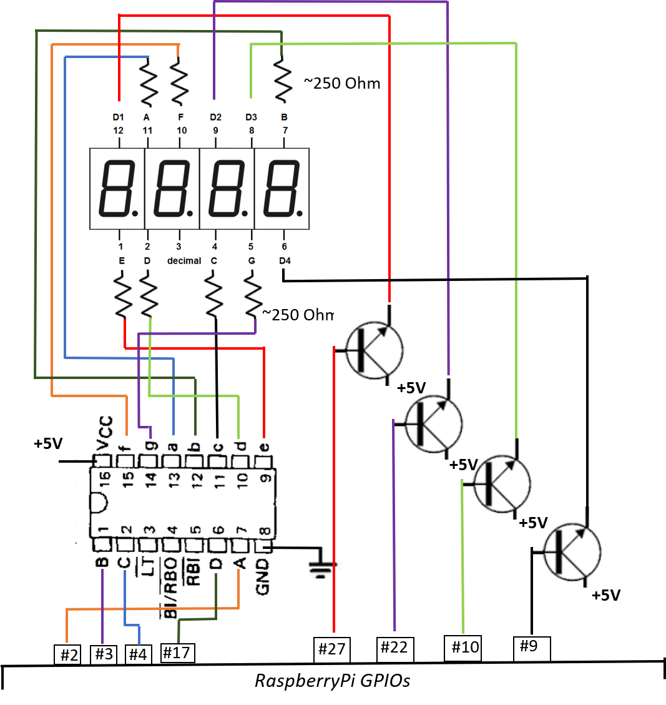
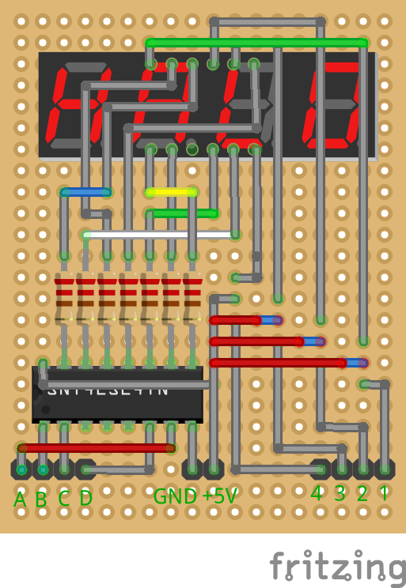

BCD approach
BCD is a Binary-Coded Decimal chip which can be used to manage display with several digits.
The chip transforms the binary code (4 bits: A, B, C, D) to the 7-segment (a,b,c,d,e,f,g) LED states representing decimal number. If you use the indicator with common anode you need to switch the digits by additional signal: one pin for one digit.
The method requires 4 pins to display decimal and additionally one pin per digit. If you use dot on display you need the additional pin. For example 4-digits-display requires 4 + 1 + 4 = 9 GPIO pins. 8-digits-display requires 4 + 1 + 8 = 13 GPIO pins.
Common anode chips examples
- 246 : SN54246, SN74246
- 247 : SN54247, SN74247
- LS247 : SN54LS247, SN74LS247(*)
- LS248 : SN54LS248, SN74LS248
(*) was tested
Usage
Without dot
using NumDisplay
d = DisplayBCD(
[ # pins to on/off digits
5, # less significant decimal digit
6,
13,
19 # most significant decimal digit
],
( # pins connected to chip to transform bits to decimal number
2, # A (less significant bit)
3, # B
4, # C
17 # D (most significant bit)
-1 # no pin for dot
)
)
write_number(d, 666) # write _666
shutdown_mode_off(d) # display _666
sleep(1)
shutdown_mode_on(d) # display nothingWith dot
using NumDisplay
d = DisplayBCD(
[ # pins to on/off digits
5, # less significant decimal digit
6,
13,
19 # most significant decimal digit
],
( # pins connected to chip to transform bits to decimal number
2, # A (less significant bit)
3, # B
4, # C
17, # D (most significant bit)
27 # pin to control dot
)
)
shutdown_mode_off(d)
write_number(d, 666) # display _666
sleep(1)
write_number(d, 666, 2) # display _66.6
sleep(1)
shutdown_mode_on(d) # display nothingCircuit
Without dot



Notes
- Here I was using the NPN transistors to switch digits because I had them but MOSFETs was also possible there.
- To use the dot symbol (which is also available on the indicator) it is required to add one additional pin.